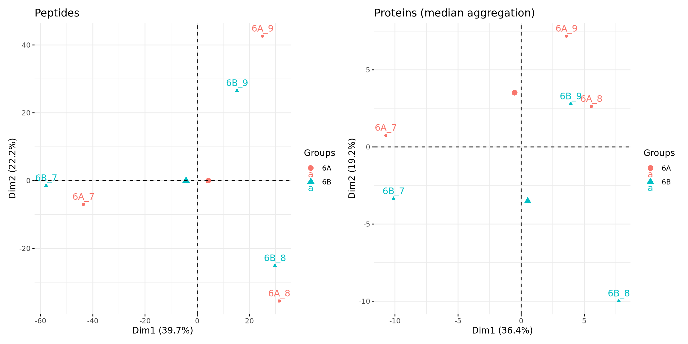
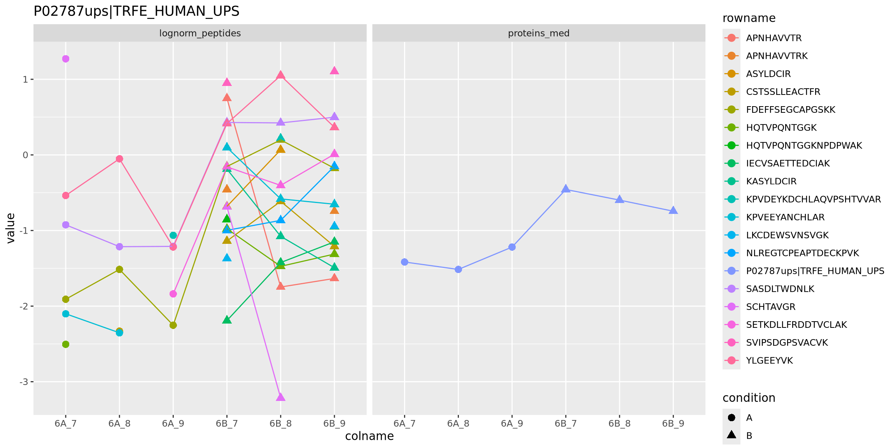
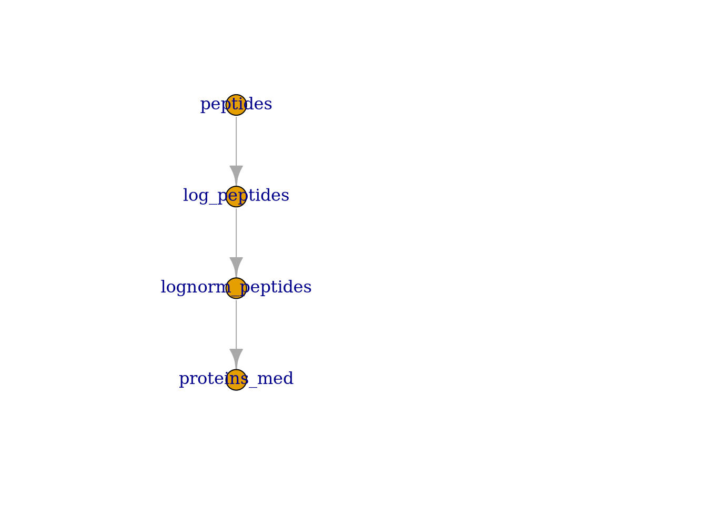
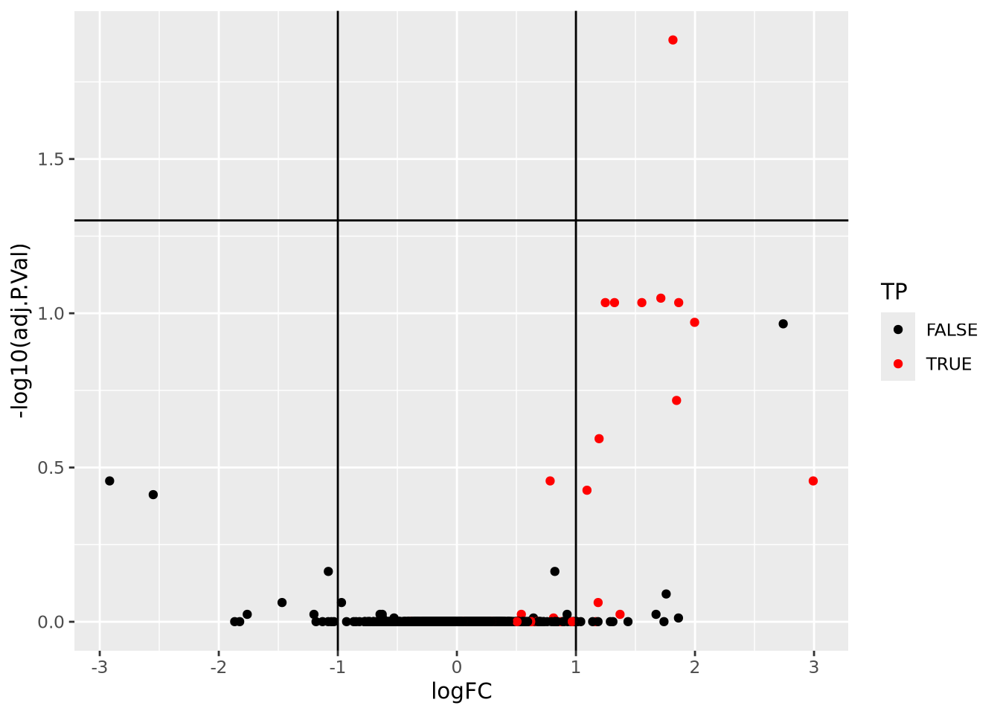

Chapter 5 Quantitative data
5.1 Quantitation methodologies
There are a wide range of proteomics quantitation techniques that can broadly be classified as labelled vs. label-free, depending on whether the features are labelled prior the MS acquisition and the MS level at which quantitation is inferred, namely MS1 or MS2.
| Label-free | Labelled | |
|---|---|---|
| MS1 | XIC | SILAC, 15N |
| MS2 | Counting | iTRAQ, TMT |
5.1.1 Label-free MS2: Spectral counting
In spectral counting, one simply counts the number of quantified peptides that are assigned to a protein.
Figure 5.1: Spectral counting. Figure from the Pbase package.

5.1.2 Labelled MS2: Isobaric tagging
Isobaric tagging refers to the labelling using isobaric tags, i.e. chemical tags that have the same mass and hence can’t be distinguished by the spectrometer. The peptides of different samples (4, 6, 10, 11 or 16) are labelled with different tags and combined prior to mass spectrometry acquisition. Given that they are isobaric, all identical peptides, irrespective of the tag and this the sample of origin, are co-analysed, up to fragmentation prior to MS2 analysis. During fragmentation, the isobaric tags fall of, fragment themselves, and result in a set of sample specific peaks. These specific peaks can be used to infer sample-specific quantitation, while the rest of the MS2 spectrum is used for identification.
Figure 5.2: iTRAQ 4-plex isobaric tagging. Tandem Mass Tags (TMT) offer up to 16 tags.

5.1.3 Label-free MS1: extracted ion chromatograms
In label-free quantitation, the precursor peaks that match an identified peptide are integrated over retention time and the area under that extracted ion chromatogram is used to quantify that peptide in that sample.
Figure 5.3: Label-free quantitation. Figure credit Johannes Rainer.
.](img/chrompeaks.png)
5.1.4 Labelled MS1: SILAC
In SILAC quantitation, sample are grown in a medium that contains heavy amino acids (typically arginine and lysine). All proteins grown in this heavy growth medium contain the heavy form of these amino acids. Two samples, one grown in heavy medium, and one grown in normal (light) medium are then combined and analysed together. The heavy peptides precursor peaks are systematically shifted compared to the light ones, and the ratio between the height of a heavy and light peaks can be used to calculate peptide and protein fold-changes.
Figure 5.4: Silac quantitation. Figure credit Wikimedia Commons.

These different quantitation techniques come with their respective benefits and distinct challenges, such as large quantities of raw data processing, data transformation and normalisation, missing values, and different underlying statistical models for the quantitative data (count data for spectral counting, continuous data for the others).
In terms of raw data quantitation in R/Bioconductor, most efforts have been devoted to MS2-level quantitation. Label-free XIC quantitation has been addressed in the frame of metabolomics data processing by the xcms infrastructure.
5.2 QFeatures
Mass spectrometry-based quantitative proteomics data can be
represented as a matrix of quantitative values for features (PSMs,
peptides, proteins) arranged along the rows, measured for a set of
samples, arranged along the columns. There is a common representation
for such quantitative data set, namely the SummarizedExperiment
(Morgan et al. 2020Morgan, Martin, Valerie Obenchain, Jim Hester, and Hervé Pagès. 2020. SummarizedExperiment: SummarizedExperiment Container. https://bioconductor.org/packages/SummarizedExperiment.) class:
Figure 5.5: Schematic representation of the anatomy of a SummarizedExperiment object. (Figure taken from the SummarizedExperiment package vignette.)

- The sample (columns) metadata can be accessed with the
colData()function. - The features (rows) metadata can be accessed with the
rowData()column. - If the features represent ranges along genomic coordinates, these
can be accessed with
rowRanges() - Additional metadata describing the overall experiment can be
accessed with
metadata(). - The quantitative data can be accessed with
assay(). -
assays()returns a list of matrix-like assays.
5.2.1 The QFeatures class
While mass spectrometers acquire data for spectra/peptides, the biological entity of interest are the protein. As part of the data processing, we are thus required to aggregate low-level quantitative features into higher level data.
Figure 5.6: Conceptual representation of a QFeatures object and the aggregative relation between different assays.

We are going to start to familiarise ourselves with the QFeatures
class implemented in the
QFeatures
package. The class is derived from the Bioconductor
MultiAssayExperiment (Ramos et al. 2017Ramos, Marcel, Lucas Schiffer, Angela Re, Rimsha Azhar, Azfar Basunia, Carmen Rodriguez Cabrera, Tiffany Chan, et al. 2017. “Software for the Integration of Multi-Omics Experiments in Bioconductor.” Cancer Research 77(21); e39-42.) (MAE) class. Let’s start by loading the
QFeatures package.
Next, we load the feat1 test data, which is composed of single
assay of class SummarizedExperiment composed of 10 rows and 2
columns.
## An instance of class QFeatures containing 1 assays:
## [1] psms: SummarizedExperiment with 10 rows and 2 columnsLet’s perform some simple operations to familiarise ourselves with the
QFeatures class:
- Extract the sample metadata using the
colData()accessor (like you have previously done withSummarizedExperimentobjects).
## DataFrame with 2 rows and 1 column
## Group
## <integer>
## S1 1
## S2 2We can also further annotate the experiment by adding columns to the colData slot:
## DataFrame with 2 rows and 3 columns
## Group X Y
## <integer> <character> <character>
## S1 1 X1 Y1
## S2 2 X2 Y2- Extract the first (and only) assay composing this
QFeaturesdata using the[[operator (as you have done to extract elements of a list) by using the assay’s index or name.
## class: SummarizedExperiment
## dim: 10 2
## metadata(0):
## assays(1): ''
## rownames(10): PSM1 PSM2 ... PSM9 PSM10
## rowData names(5): Sequence Protein Var location pval
## colnames(2): S1 S2
## colData names(0):## class: SummarizedExperiment
## dim: 10 2
## metadata(0):
## assays(1): ''
## rownames(10): PSM1 PSM2 ... PSM9 PSM10
## rowData names(5): Sequence Protein Var location pval
## colnames(2): S1 S2
## colData names(0):- Extract the
psmsassay’s row data and quantitative values.
## S1 S2
## PSM1 1 11
## PSM2 2 12
## PSM3 3 13
## PSM4 4 14
## PSM5 5 15
## PSM6 6 16
## PSM7 7 17
## PSM8 8 18
## PSM9 9 19
## PSM10 10 20## DataFrame with 10 rows and 5 columns
## Sequence Protein Var location pval
## <character> <character> <integer> <character> <numeric>
## PSM1 SYGFNAAR ProtA 1 Mitochondr... 0.084
## PSM2 SYGFNAAR ProtA 2 Mitochondr... 0.077
## PSM3 SYGFNAAR ProtA 3 Mitochondr... 0.063
## PSM4 ELGNDAYK ProtA 4 Mitochondr... 0.073
## PSM5 ELGNDAYK ProtA 5 Mitochondr... 0.012
## PSM6 ELGNDAYK ProtA 6 Mitochondr... 0.011
## PSM7 IAEESNFPFI... ProtB 7 unknown 0.075
## PSM8 IAEESNFPFI... ProtB 8 unknown 0.038
## PSM9 IAEESNFPFI... ProtB 9 unknown 0.028
## PSM10 IAEESNFPFI... ProtB 10 unknown 0.0975.2.2 Feature aggregation
The central functionality of the QFeatures infrastructure is the
aggregation of features into higher-level features while retaining the
link between the different levels. This can be done with the
aggregateFeatures() function.
The call below will
- operate on the
psmsassay of thefeat1objects; - aggregate the rows of the assay following the grouping defined in the
peptidesrow data variables; - perform aggregation using the
colMeans()function; - create a new assay named
peptidesand add it to thefeat1object.
feat1 <- aggregateFeatures(feat1, i = "psms",
fcol = "Sequence",
name = "peptides",
fun = colMeans)
feat1## An instance of class QFeatures containing 2 assays:
## [1] psms: SummarizedExperiment with 10 rows and 2 columns
## [2] peptides: SummarizedExperiment with 3 rows and 2 columns- Let’s convince ourselves that we understand the effect of feature aggregation and repeat the calculations manually and check the content of the new assay’s row data.
## S1 S2
## 2 12## S1 S2
## 2 12## S1 S2
## 5 15## S1 S2
## 5 15## S1 S2
## 8.5 18.5## S1 S2
## 8.5 18.5## DataFrame with 3 rows and 4 columns
## Sequence Protein location .n
## <character> <character> <character> <integer>
## ELGNDAYK ELGNDAYK ProtA Mitochondr... 3
## IAEESNFPFIK IAEESNFPFI... ProtB unknown 4
## SYGFNAAR SYGFNAAR ProtA Mitochondr... 3We can now aggregate the peptide-level data into a new protein-level
assay using the colMedians() aggregation function.
feat1 <- aggregateFeatures(feat1, i = "peptides",
fcol = "Protein",
name = "proteins",
fun = colMedians)
feat1## An instance of class QFeatures containing 3 assays:
## [1] psms: SummarizedExperiment with 10 rows and 2 columns
## [2] peptides: SummarizedExperiment with 3 rows and 2 columns
## [3] proteins: SummarizedExperiment with 2 rows and 2 columns## S1 S2
## ProtA 3.5 13.5
## ProtB 8.5 18.55.2.3 Subsetting and filtering
The link between the assays becomes apparent when we now subset the
assays for protein A as shown below or using the subsetByFeature()
function. This creates a new instance of class QFeatures containing
assays with the expression data for protein, its peptides and their
PSMs.
## An instance of class QFeatures containing 3 assays:
## [1] psms: SummarizedExperiment with 6 rows and 2 columns
## [2] peptides: SummarizedExperiment with 2 rows and 2 columns
## [3] proteins: SummarizedExperiment with 1 rows and 2 columnsThe filterFeatures() function can be used to filter rows the assays
composing a QFeatures object using the row data variables. We can
for example retain rows that have a pval < 0.05, which would only
keep rows in the psms assay because the pval is only relevant for
that assay.
## 'pval' found in 1 out of 3 assay(s)
## No filter applied to the following assay(s) because one or more filtering variables are missing in the rowData: peptides, proteins.
## You can control whether to remove or keep the features using the 'keep' argument (see '?filterFeature').## An instance of class QFeatures containing 3 assays:
## [1] psms: SummarizedExperiment with 4 rows and 2 columns
## [2] peptides: SummarizedExperiment with 0 rows and 2 columns
## [3] proteins: SummarizedExperiment with 0 rows and 2 columns► Question
As the message above implies, it is also possible to apply a filter to
only the assays that have a filtering variables by setting the keep
variables.
► Solution
On the other hand, if we filter assay rows for those that localise to the mitochondrion, we retain the relevant protein, peptides and PSMs.
## 'location' found in 3 out of 3 assay(s)## An instance of class QFeatures containing 3 assays:
## [1] psms: SummarizedExperiment with 6 rows and 2 columns
## [2] peptides: SummarizedExperiment with 2 rows and 2 columns
## [3] proteins: SummarizedExperiment with 1 rows and 2 columns► Question
As an exercise, let’s filter rows that do not localise to the mitochondrion.
► Solution
You can refer to the Quantitative features for mass spectrometry
data
vignette and the QFeatures manual
page
for more details about the class.
5.3 Creating QFeatures object
While QFeatures objects can be created manually (see ?QFeatures
for details), most users have a quantitative data in a spreadsheet or
a data.frame. In such cases, the easiest is to use the readQFeatures
function to extract the quantitative data and metadata columns. Below,
we load the hlpsms dataframe that contains data for 28
PSMs from the TMT-10plex hyperLOPIT spatial proteomics experiment
from (Christoforou et al. 2016Christoforou, Andy, Claire M Mulvey, Lisa M Breckels, Aikaterini Geladaki, Tracey Hurrell, Penelope C Hayward, Thomas Naake, et al. 2016. “A Draft Map of the Mouse Pluripotent Stem Cell Spatial Proteome.” Nat Commun 7: 8992. https://doi.org/10.1038/ncomms9992.). The quantCols argument specifies that
columns 1 to 10 contain quantitation data, and that the assay should
be named psms in the returned QFeatures object, to reflect the
nature of the data.
## Checking arguments.## Loading data as a 'SummarizedExperiment' object.## Formatting sample annotations (colData).## Formatting data as a 'QFeatures' object.## An instance of class QFeatures containing 1 assays:
## [1] psms: SummarizedExperiment with 3010 rows and 10 columnsBelow, we see that we can extract an assay using its index or its
name. The individual assays are stored as SummarizedExperiment
object and further access its quantitative data and metadata using
the assay and rowData functions.
## class: SummarizedExperiment
## dim: 3010 10
## metadata(0):
## assays(1): ''
## rownames(3010): 1 2 ... 3009 3010
## rowData names(18): Sequence ProteinDescriptions ... RTmin markers
## colnames(10): X126 X127C ... X130N X131
## colData names(0):## class: SummarizedExperiment
## dim: 3010 10
## metadata(0):
## assays(1): ''
## rownames(3010): 1 2 ... 3009 3010
## rowData names(18): Sequence ProteinDescriptions ... RTmin markers
## colnames(10): X126 X127C ... X130N X131
## colData names(0):## X126 X127C X127N X128C X128N X129C
## 1 0.12283431 0.08045915 0.070804055 0.09386901 0.051815695 0.13034383
## 2 0.35268185 0.14162381 0.167523880 0.07843497 0.071087436 0.03214548
## 3 0.01546089 0.16142297 0.086938133 0.23120844 0.114664348 0.09610188
## 4 0.04702854 0.09288723 0.102012167 0.11125409 0.067969116 0.14155358
## 5 0.01044693 0.15866147 0.167315736 0.21017494 0.147946673 0.07088253
## 6 0.04955362 0.01215244 0.002477681 0.01297833 0.002988949 0.06253195
## X129N X130C X130N X131
## 1 0.17540095 0.040068658 0.11478839 0.11961594
## 2 0.06686260 0.031961793 0.02810434 0.02957384
## 3 0.15977819 0.010127118 0.08059400 0.04370403
## 4 0.18015910 0.035329902 0.12166589 0.10014038
## 5 0.17555789 0.007088253 0.02884754 0.02307803
## 6 0.01726511 0.172651119 0.37007905 0.29732174## DataFrame with 6 rows and 18 columns
## Sequence ProteinDescriptions NbProteins ProteinGroupAccessions
## <character> <character> <integer> <character>
## 1 SQGEIDk Tetratrico... 1 Q8BYY4
## 2 YEAQGDk Vacuolar p... 1 P46467
## 3 TTScDTk C-type man... 1 Q64449
## 4 aEELESR Liprin-alp... 1 P60469
## Modifications qValue PEP IonScore NbMissedCleavages
## <character> <numeric> <numeric> <integer> <integer>
## 1 K7(TMT6ple... 0.008 0.11800 27 0
## 2 K7(TMT6ple... 0.001 0.01070 27 0
## 3 C4(Carbami... 0.008 0.11800 11 0
## 4 N-Term(TMT... 0.002 0.04450 24 0
## IsolationInterference IonInjectTimems Intensity Charge mzDa MHDa
## <integer> <integer> <numeric> <integer> <numeric> <numeric>
## 1 0 70 335000 2 503.274 1005.54
## 2 0 70 926000 2 520.267 1039.53
## 3 0 70 159000 2 521.258 1041.51
## 4 0 70 232000 2 531.785 1062.56
## DeltaMassPPM RTmin markers
## <numeric> <numeric> <character>
## 1 -0.38 24.02 unknown
## 2 0.61 18.85 unknown
## 3 1.11 10.17 unknown
## 4 0.35 29.18 unknown
## [ reached getOption("max.print") -- omitted 2 rows ]For further details on how to manipulate such objects, refer to the MultiAssayExperiment (Ramos et al. 2017Ramos, Marcel, Lucas Schiffer, Angela Re, Rimsha Azhar, Azfar Basunia, Carmen Rodriguez Cabrera, Tiffany Chan, et al. 2017. “Software for the Integration of Multi-Omics Experiments in Bioconductor.” Cancer Research 77(21); e39-42.) and SummarizedExperiment (Morgan et al. 2020Morgan, Martin, Valerie Obenchain, Jim Hester, and Hervé Pagès. 2020. SummarizedExperiment: SummarizedExperiment Container. https://bioconductor.org/packages/SummarizedExperiment.) packages.
It is also possible to first create a SummarizedExperiment, and then
only include it into a QFeatures object.
## class: SummarizedExperiment
## dim: 3010 10
## metadata(0):
## assays(1): ''
## rownames(3010): 1 2 ... 3009 3010
## rowData names(18): Sequence ProteinDescriptions ... RTmin markers
## colnames(10): X126 X127C ... X130N X131
## colData names(0):## An instance of class QFeatures containing 1 assays:
## [1] psm: SummarizedExperiment with 3010 rows and 10 columnsAt this stage, i.e. at the beginning of the analysis, whether you have
a SummarizedExperiment or a QFeatures object, it is a good time to
define the experimental design in the colData slot.
Exercise
The CPTAC spike-in study 6 (Paulovich et al. 2010Paulovich, Amanda G, Dean Billheimer, Amy-Joan L Ham, Lorenzo Vega-Montoto, Paul A Rudnick, David L Tabb, Pei Wang, et al. 2010. “Interlaboratory Study Characterizing a Yeast Performance Standard for Benchmarking LC-MS Platform Performance.” Mol. Cell. Proteomics 9 (2): 242–54.) combines the Sigma UPS1 standard containing 48 different human proteins that are spiked in at 5 different concentrations (conditions A to E) into a constant yeast protein background. The sample were acquired in triplicate on different instruments in different labs. We are going to start with a subset of the CPTAC study 6 containing conditions A and B for a single lab.
Figure 5.7: The CPTAC spike-in study design (credit Lieven Clement, statOmics, Ghent University).

The peptide-level data, as processed by MaxQuant (Cox and Mann 2008Cox, J, and M Mann. 2008. “MaxQuant Enables High Peptide Identification Rates, Individualized p.p.b.-Range Mass Accuracies and Proteome-Wide Protein Quantification.” Nat Biotechnol 26 (12): 1367–72. https://doi.org/10.1038/nbt.1511.) is
available in the MsDataHub package:
## see ?MsDataHub and browseVignettes('MsDataHub') for documentation## loading from cache## [1] "2f5f996e6390fa_7855"► Question
Read these data in as either a SummarizedExperiment or a QFeatures
object.
► Solution
► Question
Before proceeding, we are going to clean up the sample names by
removing the unnecessary Intensity prefix and annotate the
experiment in the object’s colData.
► Solution
► Question
There are many row variables that aren’t useful here. Get rid or all
of them but Sequence, Proteins, Leading.razor.protein, PEP,
Score, Reverse, and Potential.contaminant.
► Solution
5.4 Analysis pipeline
A typical quantitative proteomics data processing is composed of the following steps, which we are going to apply to the cptac data created above.
- Data import
- Exploratory data analysis (PCA)
- Missing data management (filtering and/or imputation)
- Data cleaning
- Transformation and normalisation
- Aggregation
- Downstream analysis
5.4.1 Missing values
Missing values can be highly frequent in proteomics. There are two reasons supporting the existence of missing values, namely biological or technical.
Values that are missing due to the absence (or extremely low concentration) of a protein are observed for biological reasons, and their pattern aren’t random (MNAR). A protein missing due to the suppression of its expression will not be missing at random: it will be missing in the condition in which it was suppressed, and be present in the condition where it is expressed.
Due to its data-dependent acquisition, mass spectrometry isn’t capable of assaying all peptides in a sample. Peptides that are less abundant than some of their co-eluting ions, peptides that do not ionise well or peptides that do not get identified might be sporadically missing in the final quantitation table, despite their presence in the biological samples. Their absence patterns are (completely) random (MAR or MCAR) in such cases.
Often, third party software that produce quantitative data use zeros
instead of properly reporting missing values. We can use the
zeroIsNA() function to replace the 0 by NA values in our
cptac_se object and then explore the missing data patterns across
columns and rows.
## $nNA
## DataFrame with 1 row and 2 columns
## nNA pNA
## <integer> <numeric>
## 1 31130 0.452497
##
## $nNArows
## DataFrame with 11466 rows and 3 columns
## name nNA pNA
## <character> <integer> <numeric>
## 1 AAAAGAGGAG... 4 0.666667
## 2 AAAALAGGK 0 0.000000
## 3 AAAALAGGKK 0 0.000000
## 4 AAADALSDLE... 0 0.000000
## 5 AAADALSDLE... 0 0.000000
## ... ... ... ...
## 11462 YYSIYDLGNN... 6 1.000000
## 11463 YYTFNGPNYN... 3 0.500000
## 11464 YYTITEVATR 4 0.666667
## 11465 YYTVFDRDNN... 6 1.000000
## 11466 YYTVFDRDNN... 6 1.000000
##
## $nNAcols
## DataFrame with 6 rows and 3 columns
## name nNA pNA
## <character> <integer> <numeric>
## 1 6A_7 4743 0.413658
## 2 6A_8 5483 0.478196
## 3 6A_9 5320 0.463980
## 4 6B_7 4721 0.411739
## 5 6B_8 5563 0.485174
## 6 6B_9 5300 0.462236Figure 5.8: Distribution of missing value (white). Peptides row with more missing values are moved towards the top of the figure.

Let’s now explore these missing values:
- Explore the number or proportion of missing values across peptides
and samples of the
cptac_sedata.

##
## 0 1 2 3 4 5 6
## 4059 990 884 717 934 807 3075- Remove rows that have too many missing values. You can do this by
hand or using the
filterNA()function.
5.4.2 Imputation
Imputation is the technique of replacing missing data with probable
values. This can be done with impute() method. As we have discussed
above, there are however two types of missing values in mass
spectrometry-based proteomics, namely data missing at random (MAR),
and data missing not at random (MNAR). These two types of missing
data, those missing at random, and those missing not at random, need
to be imputed with different types of imputation
methods
(Lazar et al. 2016Lazar, C, L Gatto, M Ferro, C Bruley, and T Burger. 2016. “Accounting for the Multiple Natures of Missing Values in Label-Free Quantitative Proteomics Data Sets to Compare Imputation Strategies.” J Proteome Res 15 (4): 1116–25. https://doi.org/10.1021/acs.jproteome.5b00981.).
Figure 5.9: Mixed imputation method. Black cells represent presence of quantitation values and light grey corresponds to missing data. The two groups of interest are depicted in green and blue along the heatmap columns. Two classes of proteins are annotated on the left: yellow are proteins with randomly occurring missing values (if any) while proteins in brown are candidates for non-random missing value imputation.

Figure 5.10: Effect of the nature of missing values on their imputation. Root-mean-square error (RMSE) observations standard deviation ratio (RSR), KNN and MinDet imputation. Lower (blue) is better.

Generally, it is recommended to use hot deck methods (nearest neighbour (left), maximum likelihood, …) when data are missing at random.Conversely, MNAR features should ideally be imputed with a left-censor (minimum value (right), but not zero, …) method.
There are various methods to perform data imputation, as described in
?impute. The imp4p package contains additional
functionality, including some to estimate the randomness of missing
data.
The general syntax for imputation is shown below, using the se_na2
object as an example:
## Imputing along margin 1 (features/rows).## Warning in knnimp(x, k, maxmiss = rowmax, maxp = maxp): 12 rows with more than 50 % entries missing;
## mean imputation used for these rows## class: SummarizedExperiment
## dim: 689 16
## metadata(3): MSnbaseFiles MSnbaseProcessing MSnbaseVersion
## assays(1): ''
## rownames(689): AT1G09210 AT1G21750 ... AT4G11150 AT4G39080
## rowData names(2): nNA randna
## colnames(16): M1F1A M1F4A ... M2F8B M2F11B
## colData names(1): nNA► Question
Following the example above, apply a mixed imputation, using knn for
data missing at random and the zero imputation for data missing not at
random. Hint: the randna variable defines which features are assumed
to be missing at random.
► Solution
► Question
When assessing missing data imputation methods, such as in Lazar et
al. (2016),
one often replaces values with missing data, imputes these with a
method of choice, then quantifies the difference between original
(expected) and observed (imputed) values. Here, using the se_na2
data, use this strategy to assess the difference between knn and
Bayesian PCA imputation.
► Solution
► Question
When assessing the impact of missing value imputation on real data,
one can’t use the strategy above. Another useful approach is to assess
the impact of the imputation method on the distribution of the
quantitative data. For instance, here is the intensity distribution of
the se_na2 data. Verify the effect of applying knn, zero,
MinDet and bpca on this distribution.
Figure 5.11: Intensity disctribution of the naset data.
► Solution

Tip: When downstream analyses permit, it might be safer not to impute data and deal explicitly with missing values. Indeed missing data imputation is not straightforward, and is likely to dramatically fail when a high proportion of data is missing (10s of %). It is possible to keep NAs when performing hypothesis tests7 Still, it is recommended to explore missingness as part of the exploratory data analysis., but (generally) not to perform a principal component analysis.
5.4.3 Identification quality control
As discussed in the previous chapter, PSMs are deemed relevant after
comparison against hits from a decoy database. The origin of these
hits is recorded with + in the Reverse variable:
##
## +
## 7572 12Similarly, a proteomics experiment is also searched against a database of contaminants:
##
## +
## 7558 26Let’s visualise some of the cptac’s metadata using standard ggplot2
code:
► Question
Visualise the identification score and the posterior probability probability (PEP) distributions from forward and reverse hits and interpret the figure.
► Solution

Note: it is also possible to compute and visualise protein groups
as connected components starting from a quantitative dataset such as a
SummarizedExperiment. See the Using quantitative
data
section in the Understanding protein groups with adjacency matrices
vignette.
5.4.4 Creating the QFeatures data
We can now create our QFeatures object using the
SummarizedExperiment as shown below.
## An instance of class QFeatures containing 1 assays:
## [1] peptides: SummarizedExperiment with 7584 rows and 6 columnsWe should also assign the QFeatures column data with the
SummarizedExperiment slot.
Note that it is also possible to directly create a QFeatures object
with the readQFeatures() function and the same arguments as the
readSummarizedExperiment() used above. In addition, most functions
used above and below work on single SummarizedExperiment objects or
assays within a QFeatures object.
5.4.5 Filtering out contaminants and reverse hits
► Question
Using the filterFeatures() function, filter out the reverse and
contaminant hits, and also retain those that have a posterior error
probability smaller than 0.05.
► Solution
5.4.6 Log-transformation and normalisation
The two code chunks below log-transform and normalise using the assay
i as input and adding a new one names as defined by name.
► Question
Use the normalize() method to normalise the data. The syntax is the
same as logTransform(). Use the center.median method.
► Solution
► Question
Visualise the result of the transformations above. The
plotDensities() function from the limma package is very
convenient, but feel free to use boxplots, violin plots, or any other
visualisation that you deem useful to assess the tranformations.
► Solution

5.4.7 Aggregation
► Question
Use median aggregation to aggregation peptides into protein values. This is not necessarily the best choice, as we will see later, but a good start.
► Solution
Looking at the .n row variable computed during the aggregation, we
see that most proteins result from the aggregation of 5 peptides or
less, while very few proteins are accounted for by tens of peptides.
##
## 1 2 3 4 5 6 7 8 9 10 11 12 13 14 15 16 17 18 19 20
## 327 234 167 132 84 73 62 49 49 29 29 24 20 13 15 12 4 6 11 5
## 21 22 23 24 25 26 28 29 30 31 32 34 37 38 39 42 51 52 62
## 7 4 7 2 2 3 1 3 1 2 2 1 1 1 1 2 1 1 15.4.8 Principal component analysis
library("factoextra")
pca_pep <-
cptac[["lognorm_peptides"]] |>
filterNA() |>
assay() |>
t() |>
prcomp(scale = TRUE, center = TRUE) |>
fviz_pca_ind(habillage = cptac$condition, title = "Peptides")
pca_prot <-
cptac[["proteins_med"]] |>
filterNA() |>
assay() |>
t() |>
prcomp() |>
fviz_pca_ind(habillage = cptac$condition,
title = "Proteins (median aggregation)")Figure 5.13: Peptide and protein level PCA analyses.
5.4.9 Visualisation
Below, we use the longFormat() function to extract the quantitative
and row data in a long format, that can be directly reused by the
tidyverse tools.
longFormat(cptac["P02787ups|TRFE_HUMAN_UPS", ,
c("lognorm_peptides", "proteins_med")]) |>
as_tibble() |>
mutate(condition = ifelse(grepl("A", colname), "A", "B")) |>
ggplot(aes(x = colname, y = value, colour = rowname, shape = condition)) +
geom_point(size = 3) +
geom_line(aes(group = rowname)) +
facet_grid(~ assay) +
ggtitle("P02787ups|TRFE_HUMAN_UPS")Figure 5.14: Peptide and protein expression profile.
We can also visualise the assays withing a QFeatures object and
their relation.

► Question
The example above shows a simple linear relationship between
assays. Create a more interesting one by applying a different
normalisation method on the log_peptides assay and aggreate that new
normalised peptide assay. Visualise the relationship with plot(), as
above.
► Solution
5.4.10 Statistical analysis
R in general and Bioconductor in particular are well suited for the statistical analysis of quantitative proteomics data. Several packages provide dedicated resources for proteomics data:
MSstats and MSstatsTMT: A set of tools for statistical relative protein significance analysis in Data dependent (DDA), SRM, Data independent acquisition (DIA) and TMT experiments.
msmsTests: Statistical tests for label-free LC-MS/MS data by spectral counts, to discover differentially expressed proteins between two biological conditions. Three tests are available: Poisson GLM regression, quasi-likelihood GLM regression, and the negative binomial of the edgeR package. All can be readily applied on
MSnSetinstances produced, for example byMSnID.DEP provides an integrated analysis workflow for the analysis of mass spectrometry proteomics data for differential protein expression or differential enrichment.
MSqRob: The
MSqRobpackage allows a user to do quantitative protein-level statistical inference on LC-MS proteomics data. More specifically, our package makes use of peptide-level input data, thus correcting for unbalancedness and peptide-specific biases. As previously shown (Goeminne et al. (2015)), this approach is both more sensitive and specific than summarizing peptide-level input to protein-level values. Model estimates are stabilized by ridge regression, empirical Bayes variance estimation and downweighing of outliers. The new version makes use of theQFeaturesinfrastructure. Label-free proteomics data are supported.msqrob2, and TMT workflows withmsqrob2tmt.proDA accounts for missing values in label-free mass spectrometry data without imputation. The package implements a probabilistic dropout model that ensures that the information from observed and missing values are properly combined. It adds empirical Bayesian priors to increase power to detect differentially abundant proteins.
Others, while not specfic to proteomics, are also recommended, such as
the limma package. When analysing spectral counting
data, methods for high throughput sequencing data are
applicable. Below, we illustrate how to apply a typical edgeR test
to count data using the msms.edgeR function from the msmsTests
package.
Below, we are going to perform our statistical analysis on the protein
data using limma.
## Warning: 'experiments' dropped; see 'drops()'## Warning: Ignoring redundant column names in 'colData(x)':The limma package is the precursor package that enables the consistent application of linear models to normalliy distributed omics data in general, and microarrays in particular.
The limma package implements an empirical Bayes method that
borrows information across features to estimate the standard error and
calculate (so called moderated) t statistics. This approach is
demonstrably more powerful that a standard t-tests when the number of
samples is low.
The code chunk below illustrates how to set up the model, fit it, and apply the empirical Bayes moderation.
## Warning: Partial NA coefficients for 25 probe(s)Finally, the topTable() function is used the extract the results for
the coefficient of interest.
res <-
topTable(fit, coef = "prots$condition6B", number = Inf) |>
rownames_to_column("protein") |>
as_tibble() |>
mutate(TP = grepl("ups", protein))Note the warning about partial NA coefficients for 23 probes:
## 6A_7 6A_8 6A_9 6B_7 6B_8
## P00167ups|CYB5_HUMAN_UPS NaN NaN NaN -0.7840558 -2.0282987
## P01112ups|RASH_HUMAN_UPS NaN NaN NaN -1.5564896 NaN
## P05413ups|FABPH_HUMAN_UPS NaN NaN NaN -3.3419480 NaN
## P08758ups|ANXA5_HUMAN_UPS NaN NaN NaN -2.7973872 -2.0137585
## sp|P06704|CDC31_YEAST NaN NaN NaN -1.2032046 -2.1252371
## sp|P25574|EMC1_YEAST -1.506177 -1.983737 -0.7795009 NaN NaN
## sp|P32608|RTG2_YEAST NaN NaN NaN NaN -4.4424189
## sp|P32769|HBS1_YEAST NaN -1.384031 -0.7285780 NaN NaN
## sp|P34217|PIN4_YEAST NaN NaN NaN -0.8378614 -0.1316397
## sp|P34237|CASP_YEAST NaN NaN NaN -1.5645172 -1.6600291
## sp|P38166|SFT2_YEAST -1.585685 -1.076707 NaN NaN NaN
## sp|P40056|GET2_YEAST NaN -1.091696 -1.4014211 NaN NaN
## sp|P40533|TED1_YEAST NaN NaN NaN -2.0491876 NaN
## sp|P43582|WWM1_YEAST NaN NaN NaN -0.5538711 -0.7360990
## sp|P46965|SPC1_YEAST NaN -3.428771 -3.6321984 NaN NaN
## sp|P48363|PFD3_YEAST NaN NaN NaN -0.1904905 NaN
## 6B_9
## P00167ups|CYB5_HUMAN_UPS -1.1230809
## P01112ups|RASH_HUMAN_UPS -1.5618192
## P05413ups|FABPH_HUMAN_UPS -3.8907081
## P08758ups|ANXA5_HUMAN_UPS -2.0894752
## sp|P06704|CDC31_YEAST -1.5844104
## sp|P25574|EMC1_YEAST NaN
## sp|P32608|RTG2_YEAST -2.7873186
## sp|P32769|HBS1_YEAST NaN
## sp|P34217|PIN4_YEAST -0.1989392
## sp|P34237|CASP_YEAST -1.6877463
## sp|P38166|SFT2_YEAST NaN
## sp|P40056|GET2_YEAST NaN
## sp|P40533|TED1_YEAST -1.7474812
## sp|P43582|WWM1_YEAST -0.7207043
## sp|P46965|SPC1_YEAST NaN
## sp|P48363|PFD3_YEAST -0.5087747
## [ reached getOption("max.print") -- omitted 9 rows ]We can now visualise the results using a volcano plot:
res |>
ggplot(aes(x = logFC, y = -log10(adj.P.Val))) +
geom_point(aes(colour = TP)) +
geom_vline(xintercept = c(-1, 1)) +
geom_hline(yintercept = -log10(0.05)) +
scale_color_manual(values = c("black","red"))## Warning: Removed 25 rows containing missing values or values outside the scale
## range (`geom_point()`).Figure 5.15: Volcano plot highlighing spiked-in proteins in red.
Using the pipeline described above, we would identify a single differentially expressed protein at an 5 percent FDR but miss out the other 36 expected spike-in proteins.
We can assess our results in terms of true/false postitves/negatives:
- True positives: 1
- False positives: 0
- True negatives: 1330
- False negatives: 32
5.5 Summary exercice
As shown below, it is possible to substantially improve these results
by aggregating features using a robust summarisation (available as
MsCoreUtils::robustSummary()), i.e robust regression with
M-estimation using Huber weights, as described in section 2.7 in
(Sticker et al. 2019Sticker, Adriaan, Ludger Goeminne, Lennart Martens, and Lieven Clement. 2019. “Robust Summarization and Inference in Proteome-Wide Label-Free Quantification.” bioRxiv. https://doi.org/10.1101/668863.).
Figure 5.16: Aggregation using robust summarisation.

- True positives: 21
- False positives: 2
- True negatives: 1340
- False negatives: 12
Repeat and adapt what we have seen here using, for example, the
robustSummary() function.
Page built: 2025-03-19 using R version 4.4.1 (2024-06-14)